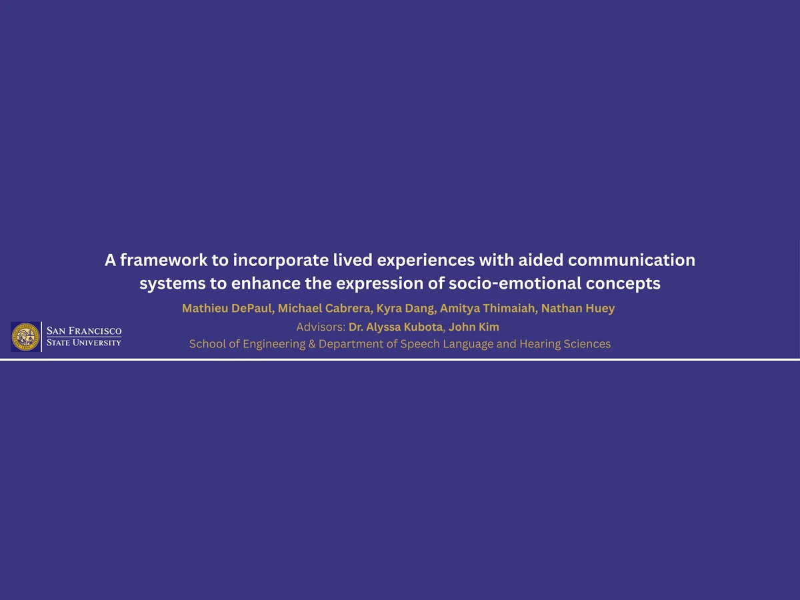

Incorporating Aided Communication Systems with Funds of Knowledge
Mathieu DePaul, Michael Cabrera, Kyra Dang, Amitya Thimaiah, Nathan Huey · Advisors: Dr. Alyssa Kubota, John Kim
School of Engineering & Department of Speech Language and Hearing Sciences, San Francisco State University
In the Personalized Health and Assistive Technologies (PHAST) Lab at SF State, I worked on a research project where one of my responsibilities was synthesizing 50+ literature reviews on unfamiliar topics, which was new to me compared to the hands-on experience I gain in the classroom. Our project explores how augmentative and alternative communication (AAC) systems, which typically rely on generic symbols, could better incorporate a user's funds of knowledge (their cultural and lived experiences) to help nonspeaking children express abstract socio-emotional concepts like feelings and states of being. My task was to get up to speed on relevant research, distill key findings, and communicate them to the rest of the team to co-author a submission. I learned how to evaluate technical papers, coordinate with my peers and faculty to create concise synthesis, and iterate based on feedback for the team's needs. This resulted in a successful submission to the California Speech and Hearing Association (CSHA), as well as real growth in my ability to navigate new technical domains and communicate my ideas clearly.